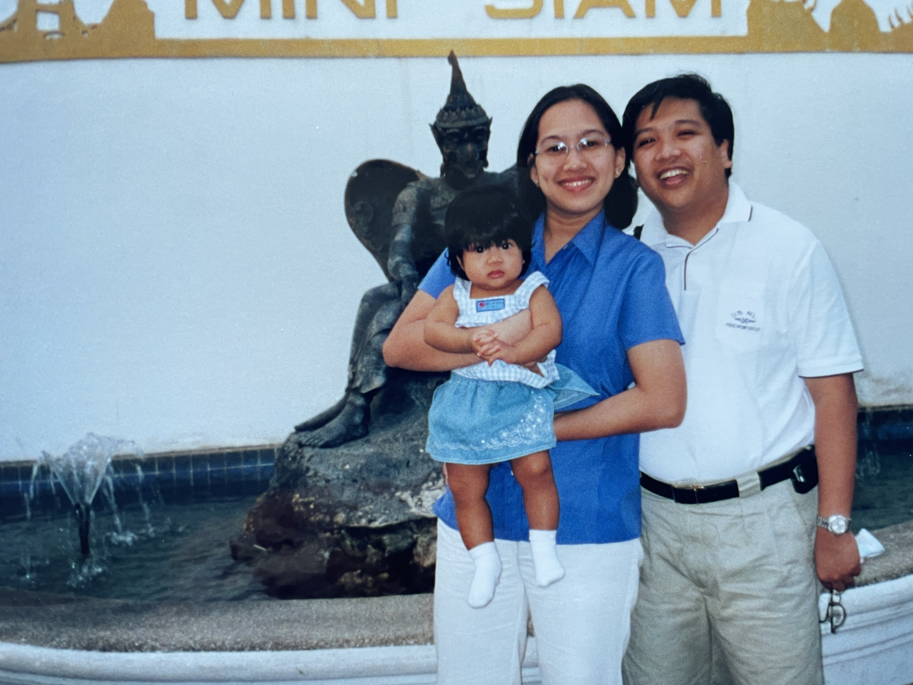

November 21, 2001
I was born in Singapore to Filipino parents Vincent and Vichelle.
I was born in Singapore to Filipino parents Vincent and Vichelle.
My parents and I moved to Bangkok, Thailand, because of my dad's job.
My little sister, Abigail, was born in Bangkok, Thailand.
My family and I moved back to Singapore. My parents, my sister, and I became Permanent Residents here.
My little brother, Joshua, was born in Singapore in the same hospital as me.

Since most of my extended family (specifically on my Mom's side) still lives in the Philippines, we would visit Manila and host for the holidays almost annually.

I started attending Singapore American School (the school I attended from Kindgarten to 12th grade).

My youngest sibling, Daniel, was born in Singapore in the same hospital as me.

I started middle school.

I became a teenager. This is the age my parents started letting me go out on my own and I got my first real phone.

I started high school.
I lived on my own for the first time when I attended summer camp at the University of Pennsylvania.
My mom got diagnosed with Stage 3 Colon Cancer.

I worked my first job as a Software Quality Assurance Intern at LeadIQ.
I graduated from Singapore American School.
I began at university at NYU remotely from Singapore due to the COVID-19 pandemic. I studied in a lot of cafes this year.
I moved to New York City to continue my education in-person at NYU.
I planned and went on my first trip abroad with friends to Cancun, Mexico for Spring Break.
I moved into my first apartment with 3 roommates in the East Village.
I worked for full-time for the first time in the US as a summer intern at Ernst & Young. I got a full-time job offer at the end of the summer.